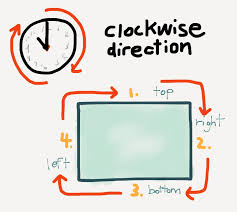
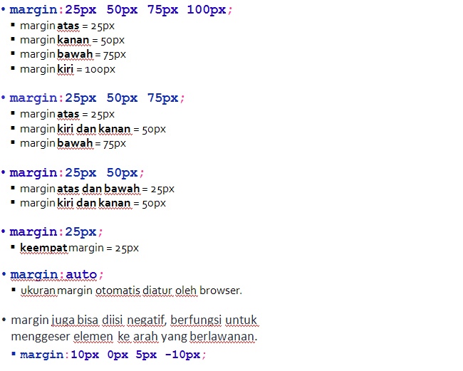
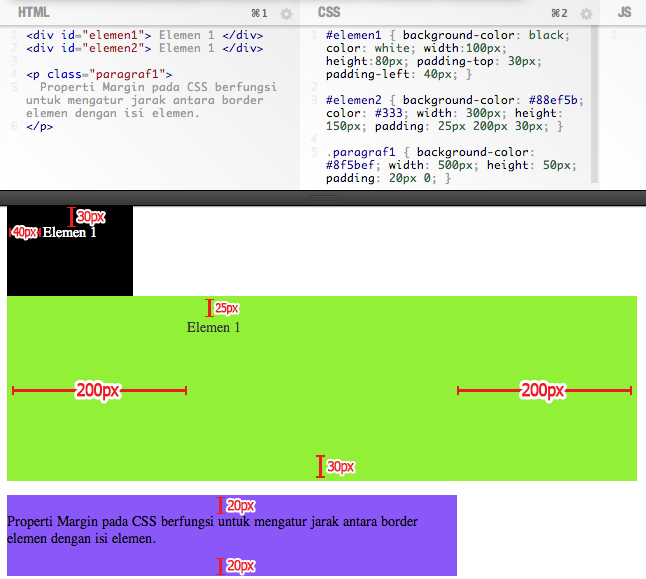
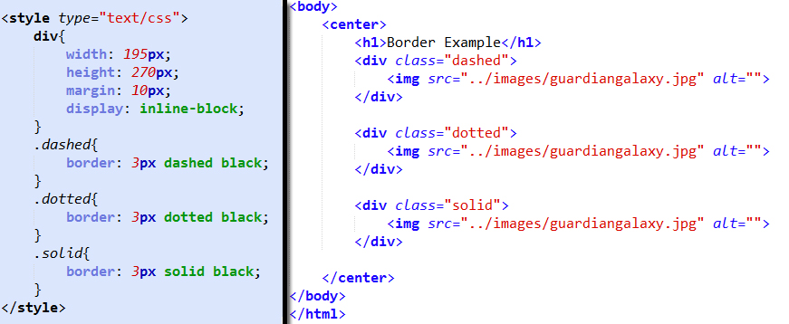

CSS Box Model
- Sebuah elemen HTML dapat kita anggap sebagai sebuah box/ kotak.
- Digunakan pada saat kita akan merancang tampilan sebuah website.
- Pada dasarnya berfungsi sebagai tempat yang membungkus isi dari elemen-elemen HTML.
- Tag yang biasanya digunakan untuk merancang tampilan adalah <div>, walaupun tag lain juga bisa menerapkan box model.
- Terdiri atas 4 bagian: Margin, Border, Padding, Content.
CSS Margin
Area yang terletak di sekeliling borderPelajari Property & Value pada CSS Margin disini.
Penulisan margin dimulai dari atas, lalu kanan, lalu bawah dan terakhir kiri, sehingga mengikuti arah jarum jam.
Berikut ini adalah beberapa cara penulisan margin beserta keterangan-nya:

Contoh:

CSS Padding
Berbeda dengan margin, CSS padding digunakan untuk menentukan spasi antara border elemen dengan isi elementPelajari Property & Value pada CSS Padding disini.
Cara penulisan-nya hampir sama dengan penulisan Margin.
Perbedaannya adalah padding tidak bisa diisi nilai negatif.
Contoh:

CSS Border
Digunakan untuk memanipulasi border pada sebuah elemen HTML.Pelajari Property & Value pada CSS Border disini.
Contoh:

hasilnya seperti ini
contoh border
Belajar lebih lanjut
Untuk latihan lebih lanjut bisa tonton link video berikut :
Latihan 4a (Point 30)
buka file .txt dibawah ini, lalu copy kan isinya dan simpan dengan nama:
L4a<NRP>.html>> download file latihan 4a <
>> download gambar <
Buatlah file css untuk menghias file html tadi dengan spesifikasi dibawah ini, simpan dengan nama:
L4a<NRP>.cssclass container
- border : 1px solid black;
- width : 800px
- margin : ?
- margin-top : 500px
class header
- width: ?
- ? : white
- text-align : ?
- height : 40px;
- ? : -23px
- background-color : ?
h3
- padding-top : 150px
- padding-left : 20px
p
- padding : 8px
- text-indent : 20px
- text-align : ?
id p1
- padding-top : 0px
class image
- margin : ?
- width : 200px
- height : 150px
img
- width : 200px
- height : 150px
- padding-top : 20px
class footer
- height : 30px
- bg-color : ?
id pfooter
- font-weight : ?
- ? : white
- text-align : ?
sehingga hasilnya seperti ini.
Latihan 4b (Point 30)
modifikasi file html dan css pada latihan 4a, simpan dengan nama :
L4b<NRP>.htmlL4b<NRP>.css
modifikasi file css dengan spesifikasi dibawah ini:
class container
- border-style: double
- border-width: 5px
- border-color: seagrenn
- tambahkan warna background dengan nama lightblue
- jenis font: arial
class header
- tambahkan warna background bernama darkblue
- line-height : 150px
- ? : merah
i dan b
- ? : white
h3
- ubah padding-left menjadi 100px
- ? : red
- buat tulisan rata tengah
class footer
- ubah tingginya menjadi 70px
- ubah warnanya menjadi putih
- ubah warna background menjadi #44749d
- tambahkan properti dan value sehingga tulisan menjadi tepat ditengah
sehingga hasilnya seperti ini.
Tugas 4a - Membuat halaman artikel
T4a<NRP>.html & T4a<NRP>.css- Carilah sebuah artikel di internet yang memiliki minimal 2 buah gambar, lalu copy-kan lah artikel tersebut pada tugas kalian.
- Struktur halaman terdiri atas 3 bagian : header, content dan footer.
- Jangan lupa sertakan sumber artikel di bawah halaman.
- Contoh tugas dapat dilihat disini.
{kind=link}
Contoh tersebut merupakan gambaran minimal yang harus terdapat pada tugas Anda. Anda diajak untuk ekplorasi membuat tugas menjadi sekreatif dan semenarik mungkin dengan menggunakan Tag HTML & CSS yang telah diajarkan.
Contoh bisa dilihat di :